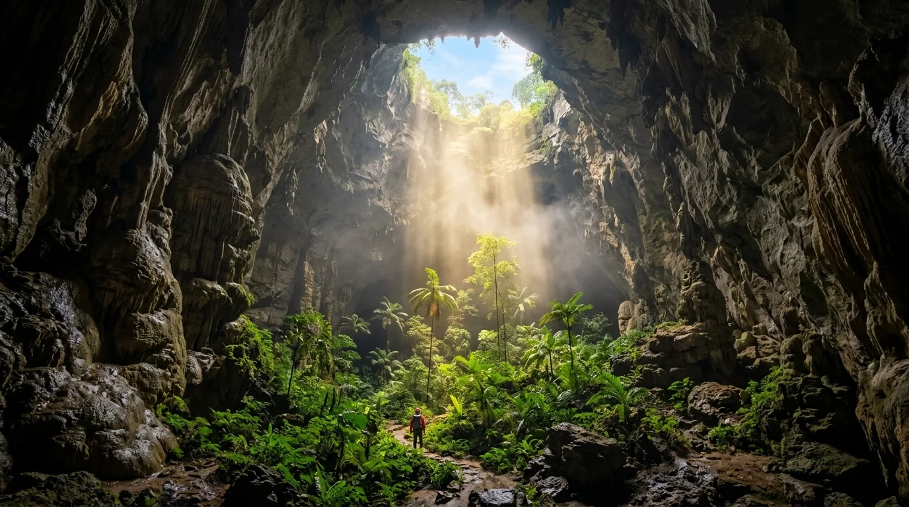
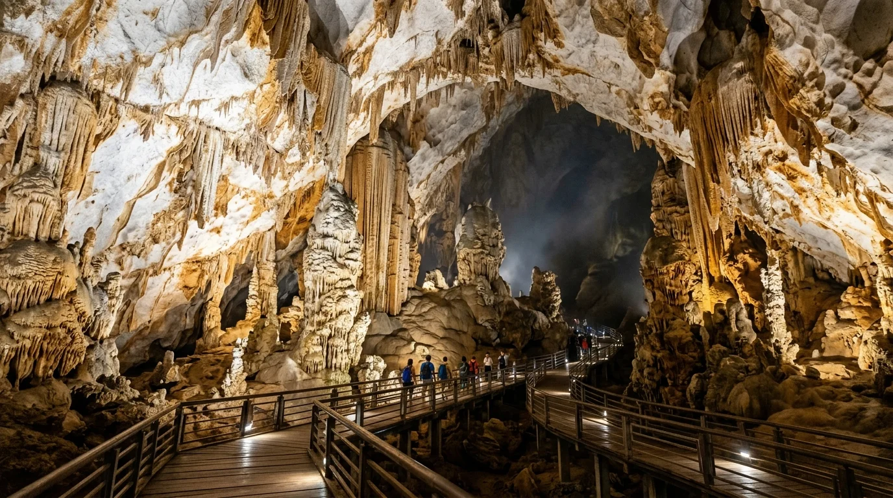
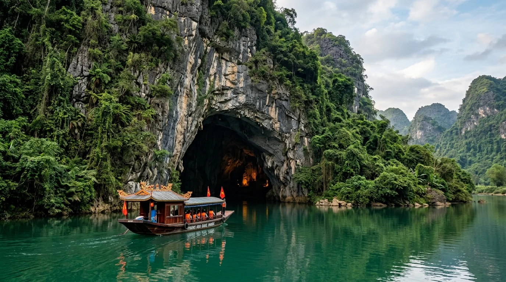
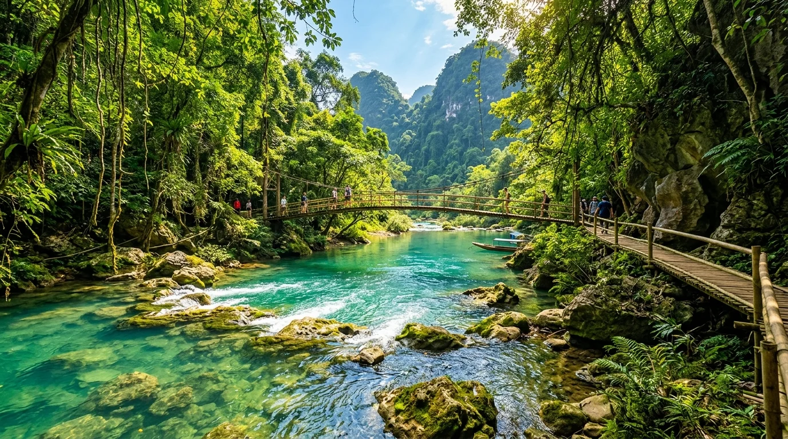
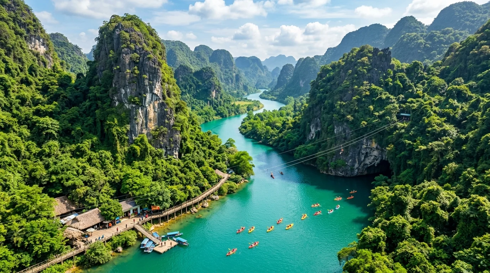
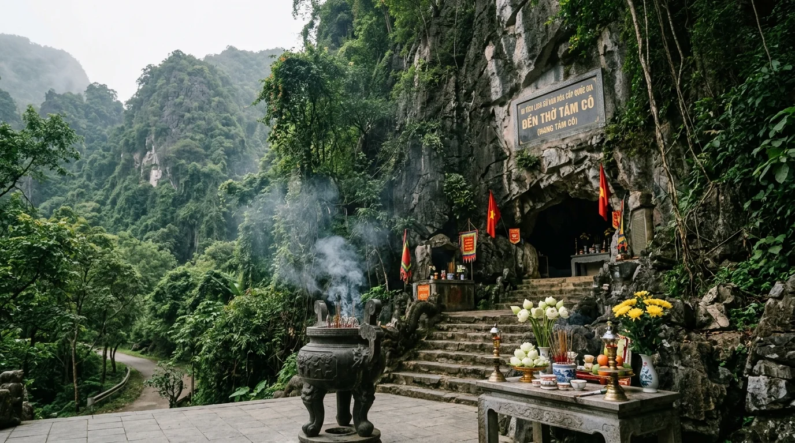
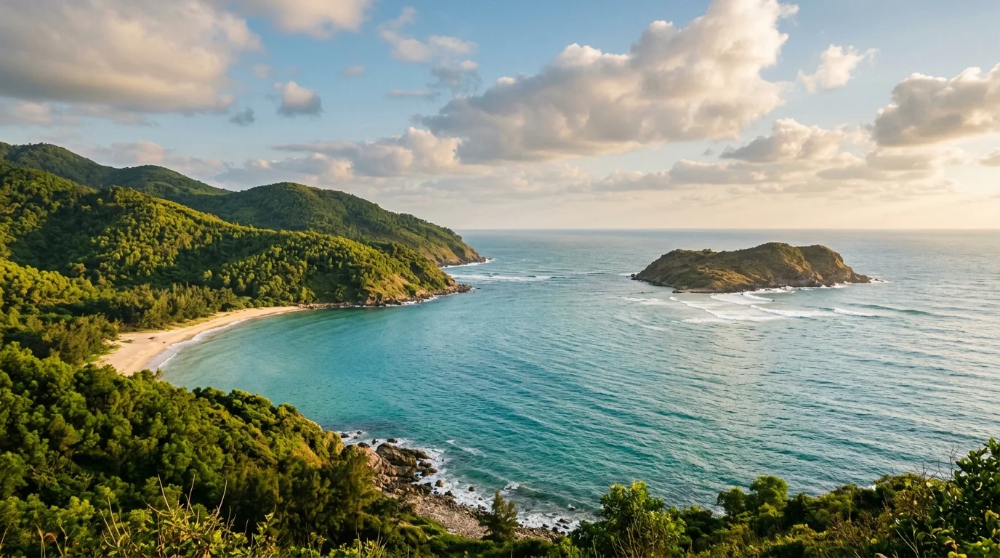
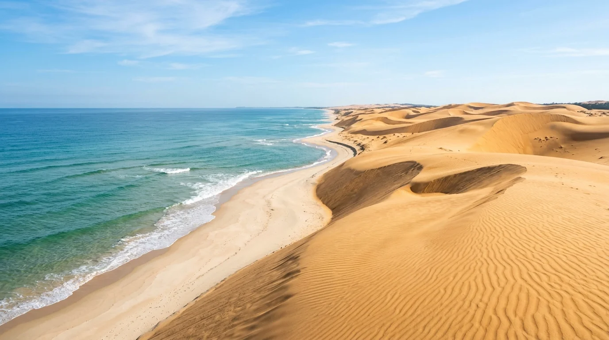
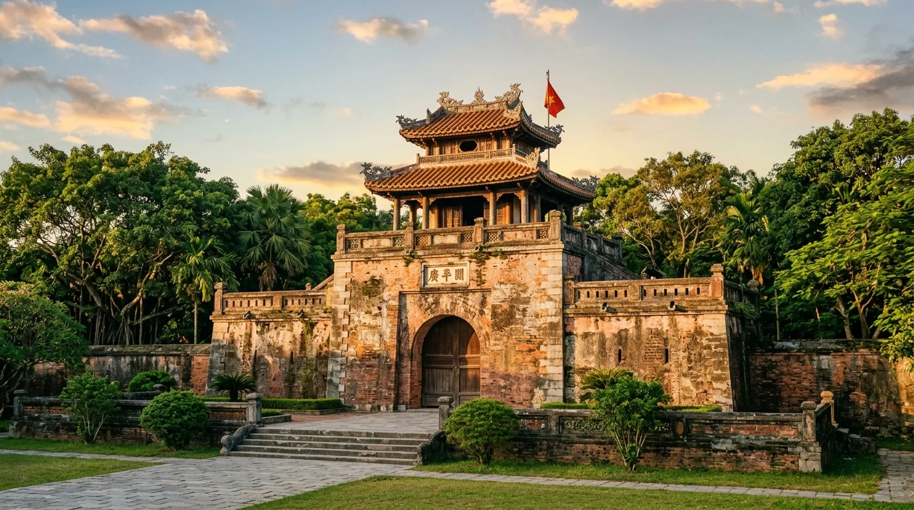

⛰️ 1. Tổng Quan & Vị Thế Di Sản Kép Phong Nha - Kẻ Bàng
Nằm ở khu vực Bắc Trung Bộ với chiều ngang hẹp nhất Việt Nam (chỉ khoảng 40,3km từ biên giới Lào ra mép biển Đông tại huyện Quảng Ninh), Quảng Bình là vùng đất hội tụ đầy đủ biển xanh, đồng bằng, núi cao và đặc biệt là hệ thống địa chất karst kỳ vĩ bậc nhất thế giới. Trái tim của du lịch Quảng Bình là Vườn Quốc gia Phong Nha - Kẻ Bàng — viên ngọc vô giá được Tổ chức UNESCO hai lần vinh danh là Di sản Thiên nhiên Thế giới:
🏛️ Dấu ấn Di sản Thế giới & Di tích Quốc gia Đặc biệt:
• Di sản Thiên nhiên Thế giới (Năm 2003): Được UNESCO công nhận lần 1 theo tiêu chí (viii) về giá trị ngoại hạng toàn cầu của hệ thống địa chất, địa mạo karst cổ trên 400 triệu năm tuổi.
• Di sản Thiên nhiên Thế giới (Năm 2015): Được UNESCO vinh danh lần 2 theo tiêu chí (ix) và (x) về hệ sinh thái nguyên sinh và đa dạng sinh học độc đáo hàng đầu Đông Nam Á.
• Di tích Lịch sử Quốc gia Đặc biệt: Tuyến đường Trường Sơn — Đường Hồ Chí Minh huyền thoại qua địa phận Quảng Bình (với các trọng điểm Hang Tám Cô, Bến phà Long Đại, Bến phà Xuân Sơn, Cổng Trời...).
📍 2. Mười Tọa Độ Check-in & Dấu Ấn Lịch Sử Quảng Bình
Nhấp vào từng thẻ thắng cảnh bên dưới để chiêm ngưỡng bộ ảnh nghệ thuật AI độc quyền cùng những trang sử liệu hào hùng, tích xưa gắn liền với từng tấc đất, ngọn sóng Quảng Bình:

Kỷ lục hang lớn nhất thế giới
📍 Vườn Quốc gia Phong Nha - Kẻ Bàng
Hang Sơn Đoòng — Kỳ Quan Lớn Nhất Thế Giới
Hang động tự nhiên lớn nhất hành tinh, kỳ quan địa chất sở hữu hệ sinh thái rừng nguyên sinh, hố sụt khổng lồ và sông ngầm độc nhất vô nhị.
Chiêm ngưỡng & Xem sử tích →

Hang động khô dài nhất Châu Á
📍 Km 16 nhánh Tây Đường Hồ Chí Minh, Bố Trạch
Động Thiên Đường — Hoàng Cung Lòng Đất
Kiệt tác hang khô 31,4km với hệ thống thạch nhũ lung linh kỳ ảo tựa hoàng cung tráng lệ, điểm đến chiêm bái nghệ thuật kiến tạo của thiên nhiên.
Chiêm ngưỡng & Xem sử tích →

Kỳ quan đệ nhất động
📍 Thị trấn Phong Nha, huyện Bố Trạch
Động Phong Nha & Dòng Sông Son
Thuyền rẽ sóng trên dòng sông Son màu ngọc bích, tiến sâu vào vòm hang kỳ vĩ dài gần 8km với hệ thống thạch nhũ ngàn năm huyền ảo.
Chiêm ngưỡng & Xem sử tích →

Tuyệt tác suối ngầm karst
📍 Nhánh Tây Đường Hồ Chí Minh, Bố Trạch
Suối Nước Moọc — Dòng Nước Ngọc Bích
Dòng suối ngầm karst phun trào từ lòng núi đá vôi với làn nước xanh ngọc trong vắt 20°C quanh năm giữa rừng nguyên sinh.
Chiêm ngưỡng & Xem sử tích →

Trải nghiệm zipline & tắm bùn
📍 Xã Sơn Trạch (nay là thị trấn Phong Nha)
Sông Chày & Hang Tối
Thử thách đu dây zipline vượt sông Chày màu xanh biếc, chèo thuyền kayak và ngâm mình tắm bùn khoáng tự nhiên trong hang Tối kỳ thú.
Chiêm ngưỡng & Xem sử tích →

Di tích Lịch sử Quốc gia
📍 Km 16.5 Đường 20 Quyết Thắng, Tân Trạch
Di Tích Hang Tám Cô — Đường 20 Quyết Thắng
Khúc tráng ca bất tử của 8 chiến sĩ thanh niên xung phong kiên cường hy sinh năm 1972 để giữ vững huyết mạch đường Trường Sơn lịch sử.
Chiêm ngưỡng & Xem sử tích →

Địa chỉ đỏ tri ân
📍 Xã Quảng Đông, huyện Quảng Trạch
Vũng Chùa - Đảo Yến — Nơi An Nghỉ Đại Tướng
Chốn yên nghỉ thanh bình của Đại tướng Võ Nguyên Giáp bên rặng thông xanh ngút ngàn dưới chân dãy Hoành Sơn lộng gió biển.
Chiêm ngưỡng & Xem sử tích →
Di tích Lịch sử Thế kỷ XIX
📍 Đỉnh dãy Hoành Sơn, giáp ranh Hà Tĩnh
Đèo Ngang & Hoành Sơn Quan
Cổng trời cổ kính xây năm 1833 trên đỉnh đèo lộng gió, nơi hội tụ trang sử mở cõi và bài thơ bất hủ của nữ sĩ Bà Huyện Thanh Quan.
Chiêm ngưỡng & Xem sử tích →

Bãi biển thơ mộng & đồi cát
📍 Trung tâm Thành phố Đồng Hới
Biển Nhật Lệ & Đồi Cát Quang Phú
Bãi cát trắng mịn óng ả bên làn nước biển trong xanh của thành phố hoa hồng Đồng Hới, kết hợp trượt cát mạo hiểm tại đồi cát Quang Phú.
Chiêm ngưỡng & Xem sử tích →

Di tích Quân sự Thế kỷ XVII
📍 Trung tâm Thành phố Đồng Hới
Quảng Bình Quan & Hệ Thống Lũy Thầy
Chứng tích quân sự lẫy lừng thế kỷ XVII do danh thần Đào Duy Từ thiết kế, chốt chặn kiên cố thời Trịnh - Nguyễn phân tranh.
Chiêm ngưỡng & Xem sử tích →
🔦 3. Cẩm Nang Thám Hiểm Hang Động An Toàn & Chuẩn Mực
Quảng Bình là thủ phủ hang động với nhiều loại hình trải nghiệm: từ tuyến tham quan đại trà có lối đi cầu gỗ (Phong Nha, Thiên Đường) đến các tour mạo hiểm cấp độ cao (Sơn Đoòng, Tú Làn, Hang Én). Để có chuyến thám hiểm trọn vẹn, du khách cần lưu ý:
1. Trang bị cá nhân cần chuẩn bị
- Giày chuyên dụng leo núi / lội nước: Chọn giày có độ bám gai cao, mau ráo nước để vượt qua đá tai mèo sắc nhọn và lội suối đá trơn trượt.
- Trang phục mau khô & quần áo dài tay: Tránh cọ xát với vách đá và giữ ấm khi vào sâu trong hang (nhiệt độ lòng hang thường dao động 18 - 22°C).
- Đèn pin đội đầu chống nước & túi chống nước: Bắt buộc trang bị để giữ an toàn cho điện thoại, máy ảnh khi tham gia các hoạt động chèo kayak hoặc bơi hang.
2. Quy tắc bảo vệ di sản thiên nhiên (Không để lại gì ngoài những dấu chân)
- Tuyệt đối không chạm tay vào thạch nhũ sống: Mồ hôi và dầu từ da người sẽ làm ngưng trệ quá trình tích tụ khoáng chất hàng triệu năm và làm đen nhũ đá.
- Thu gom toàn bộ rác thải cá nhân: Nghiêm cấm xả rác, khạc nhổ hoặc bẻ gãy bất kỳ mẫu thạch nhũ nào trong khuôn viên Vườn Quốc gia.
🚗 4. Hướng Dẫn Di Chuyển Từ Thủ Đô Hà Nội Đến Quảng Bình
Khoảng cách đường bộ từ trung tâm Thủ đô Hà Nội đến Thành phố Đồng Hới (Quảng Bình) khoảng 500km. Hiện nay hạ tầng giao thông kết nối vô cùng thuận lợi với 3 phương án:
Phương án 1: Đường hàng không bay thẳng Hà Nội → Đồng Hới (Nhanh nhất)
- Chặng bay: Sân bay Quốc tế Nội Bài (HAN) → Cảng hàng không Đồng Hới (VDH).
- Thời gian bay: Đúng 1 giờ đồng hồ (khai thác bởi Vietnam Airlines, Bamboo Airways, Vietjet Air).
- Ưu điểm: Tiết kiệm tối đa thời gian, sân bay Đồng Hới chỉ cách trung tâm thành phố khoảng 6km rất tiện di chuyển.
Phương án 2: Tàu hỏa Bắc - Nam (Trải nghiệm ngắm cảnh thư thái)
- Hành trình: Ga Hà Nội → Ga Đồng Hới (các chuyến tàu SE1, SE3, SE5, SE7, QB1).
- Thời gian chạy: Khoảng 8,5 đến 10 giờ.
- Kinh nghiệm: Bạn nên chọn chuyến tàu đêm khởi hành lúc 20h00 - 22h00 tối từ Hà Nội, ngủ một giấc êm ái trên toa giường nằm có điều hòa và thức dậy lúc sáng sớm tại Đồng Hới sẵn sàng bắt đầu hành trình.
Phương án 3: Đường bộ cao tốc Bắc - Nam phía Đông
- Lộ trình cao tốc: Hà Nội (Cao tốc Pháp Vân - Cầu Giẽ) → Cao Bồ - Mai Sơn (Ninh Bình) → Mai Sơn - QL45 (Thanh Hóa) → Nghi Sơn - Diễn Châu (Nghệ An) → Diễn Châu - Bãi Vọt (Hà Tĩnh) → Tiếp nối Quốc lộ 1A hoặc các đoạn cao tốc mới vào Quảng Bình.
- Thời gian di chuyển: Khoảng 6 đến 7 giờ chạy ô tô cá nhân hoặc xe khách giường nằm chất lượng cao.
🎟️ 5. Bảng Giá Vé Tham Quan Niêm Yết Chính Thức
Dưới đây là biểu phí dịch vụ và vé tham quan niêm yết theo quy định của Hội đồng Nhân dân tỉnh Quảng Bình và Ban Quản lý Vườn Quốc gia Phong Nha - Kẻ Bàng:
| Địa điểm / Thắng cảnh |
Mức giá niêm yết |
Chi tiết dịch vụ bao gồm |
| Động Phong Nha |
150.000 VNĐ / người |
Vé vào cửa tham quan hang động (Trẻ em dưới 1,3m miễn phí) |
| Thuyền vận chuyển Động Phong Nha |
550.000 VNĐ / thuyền |
Thuyền máy chở tối đa 12 khách (có thể ghép đoàn tiết kiệm chi phí) |
| Động Tiên Sơn |
80.000 VNĐ / người |
Vé tham quan hang khô Tiên Sơn trên núi cao |
| Động Thiên Đường |
250.000 VNĐ / người |
Vé tham quan 1.000m cầu gỗ hoàng cung (Xe điện từ 100.000 - 200.000 VNĐ/xe) |
| Suối Nước Moọc (Vé ngắm cảnh) |
80.000 VNĐ / người |
Vé vào cổng tham quan, chụp ảnh sinh thái cầu tre |
| Suối Nước Moọc (Vé trọn gói) |
180.000 VNĐ / người |
Trọn gói tắm suối, chèo thuyền kayak, áo phao, cứu hộ |
| Sông Chày - Hang Tối (Trọn gói) |
450.000 VNĐ / người |
Đu dây zipline 400m, tắm bùn Hang Tối, chèo kayak, trò chơi nước |
| Di tích Hang Tám Cô |
Miễn phí 100% |
Di tích lịch sử Quốc gia, mở cửa đón khách dâng hương quanh năm |
| Vũng Chùa - Đảo Yến |
Miễn phí 100% |
Nơi an nghỉ Đại tướng Võ Nguyên Giáp, mở cửa tự do trang nghiêm |
| Đèo Ngang & Hoành Sơn Quan |
Miễn phí 100% |
Di tích cổng thành trên đỉnh đèo, tham quan ngắm cảnh tự do |
🍲 6. Cẩm Nang Ẩm Thực Đặc Sản Quảng Bình
Ẩm thực Quảng Bình mang phong vị mộc mạc, đậm đà của dải đất miền Trung nắng gió, nơi sản vật của rừng già và biển khơi hòa quyện:
- Cháo Canh Cá Lóc Quảng Bình: Món ăn sáng biểu tượng với sợi bánh canh nhào từ bột gạo hoặc bột mì mềm dai, nước dùng hầm xương ngọt thanh đậm đà, cá lóc đồng rim nghệ vàng ươm, ăn kèm rau cải xanh thái chỉ và ram (chả giò) nóng giòn tan.
- Khoai Gieo Hải Ninh: Món quà quê nức tiếng chế biến từ giống khoai lang đỏ trồng trên cát trắng, phơi qua nhiều lần nắng gió biển để tạo nên những thanh khoai dẻo quánh, ngọt bùi tự nhiên nhai càng lâu càng đượm vị.
- Bánh Bột Lọc & Bánh Bèo Tôm Cháy: Vỏ bánh bột lọc trong suốt dai giòn bọc nhân tôm sông và thịt mộc nhĩ xào đậm đà, chấm nước mắm ớt cay xé lưỡi đặc trưng miền Trung.
- Chắt Chắt Sông Gianh Xúc Bánh Tráng: Con chắt chắt (loài nhuyễn thể nhỏ hơn hến sống ở đáy sông Gianh) xào thơm cùng hành hoa, ớt tươi, xúc ăn kèm bánh tráng mè nướng giòn rụm.
- Đẻn Biển (Rắn biển): Đặc sản quý hiếm của vùng biển Quảng Bình với các món ram đẻn biển giòn rụm, đẻn nướng sả ớt hoặc rượu tiết đẻn biển bổ dưỡng.
☀️ 7. Thời Điểm Du Lịch Lý Tưởng & Lưu Ý Thời Tiết
Khí hậu Quảng Bình chia làm hai mùa rõ rệt, du khách cần lưu ý thời gian biểu để chuyến đi trọn vẹn nhất:
- Mùa khô (Tháng 4 đến tháng 8): Là thời điểm vàng lý tưởng nhất để du lịch Quảng Bình. Trời nắng đẹp, nước sông Son, suối Moọc trong vắt màu ngọc bích, các hang động ngập nước mở cửa đón khách an toàn, sóng biển Nhật Lệ êm ả thích hợp tắm biển và thám hiểm hang động.
- Mùa mưa bão (Tháng 9 đến tháng 11): Thường có mưa lớn và lũ lụt, mực nước sông Son dâng cao làm ngập cửa Động Phong Nha và các tour hang động nước sẽ tạm ngừng khai thác để đảm bảo an toàn. Nếu đi vào mùa này, bạn nên theo dõi kỹ dự báo thời tiết và ưu tiên các hang khô như Động Thiên Đường.
- Mùa xuân (Tháng 12 đến tháng 3): Tiết trời se lạnh, không khí trong lành, cây cối đâm chồi nảy lộc, rất phù hợp cho các chuyến du xuân vãn cảnh, viếng Vũng Chùa - Đảo Yến và dâng hương tại Hang Tám Cô.
⚠️ Lưu ý quan trọng khi vào hang động & di tích tâm linh:
• Khi viếng Di tích Hang Tám Cô và mộ Đại tướng tại Vũng Chùa, du khách bắt buộc mặc trang phục kín đáo, lịch sự, giữ trật tự và không nói cười lớn tiếng.
• Không bôi kem chống nắng hoặc chất hóa học ngay trước khi bơi tại Suối Nước Moọc để bảo vệ hệ sinh thái rêu đá và sinh vật thủy sinh tự nhiên.